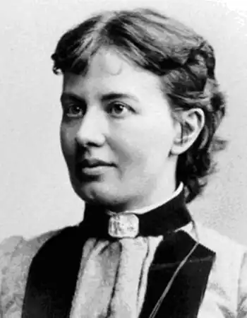
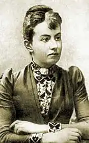

Софія Василівна Ковалевська народилась 15 січня 1850 р. в Москві. Батько її — Василь Васильович Крюковський був військовий. Він брав участь у трьох військових походах, був нагороджений найвищими військовими орденами і медалями.
У 1858 р. в чині генерала артилерії батько вийшов у відставку і переїхав з родиною до свого маєтку в с. Палібіно Вітебської губернії. Тут і пройшли дитячі роки Соні.
Змалку в дівчини проявилися такі риси характеру, як зосередженість, наполегливість у досягненні мети і цілковита самостійність. Читати Соня навчилася сама. Пізніше до дітей взяли вчителів. Гувернантка-англійка вчила Соню хороших манер і англійської мови. Учитель Малевич викладав російську граматику, літературу, математику та інші предмети. Він був широко освіченою людиною, передовим педагогом. Спочатку арифметики Соня не любила, але згодом захопилась нею: вона розв'язувала задачі за допомогою різних комбінацій чисел, виявляючи в цьому неабияку кмітливість. Малевич дав їй вивчати двотомний курс арифметики французького математика Бурдона, написаний для студентів Паризького університету. Вивчення геометрії також ішло успішно. Інколи, вислухавши доведення вчителя, вона доводила деякі теореми по-своєму. Коли Соні сповнилось 14 років, під час зимового перебування родини Кркжовських у Петербурзі викладачем математики до неї запросили лейтенанта флоту О. М. Страннолюбського. Вже на перших заняттях викладача здивувало те, що дівчина так швидко засвоювала перші поняття з вищої математики — поняття границі, похідної тощо, "начебто вона їх раніше знала". Соня пояснила: "У ту хвилину, коли ви пояснювали мені ці поняття, мені раптом пригадалося, що все це було написано в лекціях Остроградського, якими була обклеєна наша кімната, і саме поняття про границю здалося мені давно відомим". Щоб жити самостійно і вчитися, восени 1868 р. Софія Василівна вступає у фіктивний шлюб (який пізніше став фактичним) з Ковалевським Володимиром Онуфрійовичем. У житті Софії Василівни починається новий період: вона із захопленням відвідує лекції з фізіології професора Сєченова у Медичній академії, анатомію вивчає в лабораторії професора Грубера, біологію— у Мечникова, хімію — у Зініна і математику — в Страннолюбського. Така багатопредметність у навчанні пояснюється тим, що Софія Василівна готується складати екзамени на атестат зрілості. Крім цього, вона мріє стати лікарем, щоб бути ближче до народу і краще служити йому. Але склавши екзамени на атестат зрілості, вона віддає перевагу математиці. У тодішній Росії до вищої школи жінок не приймали. Тому подружжя Ковалевських разом із сестрою Софії Ганною виїжджає за кордон. У Гейдельберзі, де в університеті працювали видатні німецькі вчені Кірхгоф, Гельмгольц, Бунзен та ін., вона добилася дозволу відвідувати лекції. Щотижня вона слухала по 22 лекції, з яких 16 — з математики. Навчання в університеті йшло дуже добре. Наприкінці 1870 р. Софія Василівна закінчує навчання в Гейдельберзі і переїздить до Берліна, щоб продовжувати математичну освіту в столиці Пруссії. У Берлінському університеті працював тоді визначний учений-математик Вейєрштрасс — великий знавець вищих трансцендентних функцій, абелевих і особливо складних еліптичних та ультраеліптичних. Софію Василівну він прийняв дома і, уважно вислухавши її прохання, запропонував кілька завдань з математики. Завдання виявились досить складними, але Ковалевська з ними впоралась своєчасно. Переконавшись, що завдання розв'язані блискуче, Вейєрштрасс погодився працювати з нею двічі на тиждень по 2 години. Учитись у Вейєрштрас-са було нелегко. Німецький математик Фелікс Клейн говорив, що інтелектуальна сила Вейєрштрасса більше пригнічувала слухачів, ніж сприяла їх самостійній творчості. Софія Василівна, працюючи у Вейєрштрасса, вела власну творчу роботу. Першу невелику працю вона написала для математичного журналу, але вона не була надрукована через те, що до редакції кількома днями раніше надійшла аналогічна праця іншого автора. У цей період Софія Василівна написала три складних математичних праці. Перша з них називалася "Зведення деякого класу абелевих інтегралів третього рангу до інтегралів еліптичних", її дуже високо оцінив професор Вейєрштрасс. Друга її праця — "Про форму кільця Сатурна" —доповнювала дослідження Лапласа з цього питання. Третя праця — "До теорії диференціальних рівнянь у частинних похідних" узагальнювала відповідні дослідження самого Вейєрштрасса. До Вейєрштрасса цю тему досліджував відомий французький математик Коші. Теорема, що її довела Ковалевська, належить до класичних, вона увійшла до математичних курсів університету під назвою "теорема Коші-Ковалевської". У 1874 р. проф. Вейєрштрасс поставив питання перед Геттінгенським університетом про надання С. Ковалевській заочно і без екзаменів ступеня доктора філософії. Він писав, що С. Ковалевська сильна в усіх галузях математики і що кожна з її трьох праць може бути достатньою підставою для присудження їй ступеня доктора наук. Математичний факультет університету розглянув ці праці і дав їм найвищу оцінку. На підставі постанови факультету рада Геттінгенського. університету в липні 1874 р. ухвалила надати С. В. Ковалевській без екзамену і диспуту, заочно ступінь доктора філософії з найвищою відзнакою. Того ж року Ковалевська повертається до Петербурга. Зайняти посаду викладача математики у вищій школі вона не могла, бо це було жінкам категорично заборонено. Софія Василівна змушена була відійти на деякий час від наукової роботи. Вона поринула у літературно-публіцистичну діяльність: писала для газет наукові нариси і театральні рецензії. У домі Ковалевських можна було зустріти таких визначних учених, як Сєченов, Менделєєв, Чебишов, письменників — Тургенєва, Достоєвського та ін. Ковалевська показує свої математичні праці Чебишову. Він дав їм високу оцінку за свіжість, глибину думок і, порадив одну з них прочитати на VI з'їзді природодослідників і лікарів, що мав відбутися у Петербурзі в 1879 р. Доповідь Ковалевської на тему "Зведення деякого класу абелевих інтегралів третього рангу до еліптичних інтегралів" вислухали з великою увагою. Видатні вчені М. Є. Жуковський і К. А. Тимирязєв щиро радили їй працювати й далі в цій галузі, бо вона "народилася для математики". У 1880 р. Ковалевська переїжджає в Москву і просить дозволу складати екзамени на ступінь магістра, але її прохання було відхилено. У 1881 р. вона виїхала у Берлін, а потім у Париж. Але і тут не змогла знайти місця викладача у вищій школі. Того ж 1881 р. Ковалевська повернулася до Росії. У серпні 1883 р. VII з'їзд природодослідників і лікарів, що відбувся в Одесі, одноголосно обрав Софію Василівну головою математичної секції. Тут було зачитано дві доповіді — доктора філософії С. В. Ковалевської і професора Московського університету М. Є. Жуковського. Доповідь С. В. Ковалевської "Про інтегрування диференціальних рівнянь з частинними похідними, що визначають заломлення світла в прозорому кристалічному середовищі" викликала великий інтерес. Наступного, 1884 р. Софія Василівна зробила доповідь на цю саму тему на засіданні Паризької академії наук. Пізніше її було надруковано в записках Паризької академії наук і Стокгольмської академії наук. Праця була високо оцінена вченими всього світу, вона принесла авторці широку популярність у наукових колах. На VII з'їзді природодослідників Софія Василівна зустрілась з професором Стокгольмського університету Міттаг-Леффлером і дістала запрошення зайняти посаду приват-доцента в новому Стокгольмському університеті. Ковалевська дала згоду і незабаром була запрошена в Стокгольм офіційно. До Стокгольма Софія Василівна приїхала в листопаді 1883 p., а з січня 1884 р. почала читати лекції про диференціальні рівняння з частинними похідними. У першому семестрі вона читала лекції німецькою мовою, а до початку другого семестру оволоділа шведською мовою настільки, що читала цією мовою лекції шведським студентам. Рада університету обрала С. В. Ковалевську штатним ординарним професором. Шведські газети помістили її портрети і біографію. Професор Міттаг-Леффлер одержував листи від газетярів Парижа, Лондона і Відня з проханням надіслати портрет і біографію С. В. Ковалевської. Наступного року в Стокгольмському університеті С. В. Ковалевській запропонували читати, крім лекцій з чистої математики, курс лекцій з механіки. Поряд з читанням лекцій в університеті Софія Василівна наполегливо проводила дослідження. Світову славу Ковалевській принесла її фундаментальна праця "Обертання твердого тіла навколо нерухомої точки". До Ковалевської над цим питанням працювали Ейлер і Лагранж. Після їх праць тільки праці Ковалевської просунули вперед розв'язання цієї задачі. У 1888 р. Паризька академія наук оголосила третій конкурс на кращу працю з цієї теми з видачею премії Бордена на три тисячі франків. Перші два конкурси не дали очікуваних результатів, і премію нікому не присудили. Софія Василівна надіслала свою роботу на конкурс, узявши за девіз французьку приказку: "Говори, що знаєш, роби, що повинен; що буде, те й буде". На конкурс було подано 15 праць. Спеціальна комісія Паризької академії визнала, що твір під девізом "Говори, що знаєш", відмінний, що в ньому відкрито новий випадок. Враховуючи всі наукові якості цієї праці, комісія ухвалила присудити авторові твору збільшену премію: замість трьох тисяч — п'ять тисяч франків. Ця праця була надрукована в наукових записках Паризької академії наук за 1889 р. Повернувшись у Стокгольм, Софія Василівна з властивою їй наполегливістю знову взялася за дослідження і написала ще дві праці про рух тіла навколо нерухомої точки, за які Стокгольмська академія наук видала їй премію 1500 крон. Але слава, блискучі успіхи в науці, вечори і прийоми, що влаштовувались на її честь, не могли заглушити в Ковалевської бажання жити і працювати на рідній землі. Вона робить останню спробу: у квітні 1889 p. виїздить у Росію з надією, що її оберуть членом Петербурзької Академії наук. Зустріли її в Петербурзі сердечно, з радістю. Група визначних учених щиро підтримувала наміри Ковалевської і намагалася допомогти їй. У листопаді 1889 р.